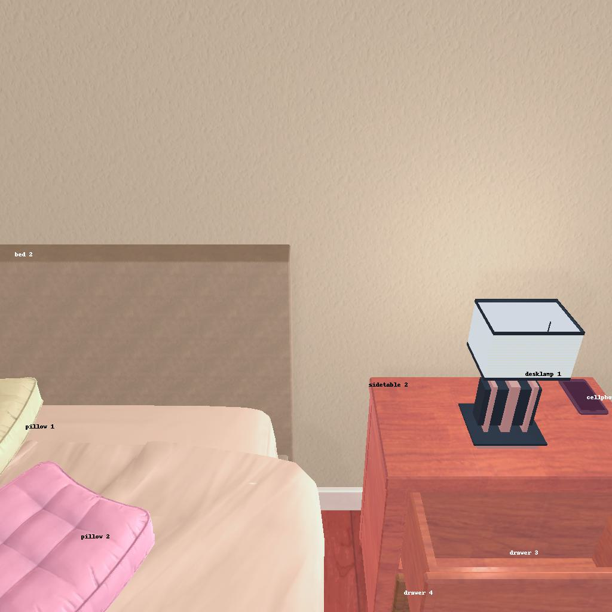

---------------------------------------------------------task: 6---------------------------------------------------------
--------------------------------------------------------------------------------------------------------------------------------------------------------------------
--------------------------------------------------------------------------------------------------------------------------------------------------------------------
Step:--------------------------------------------------------------------------14-------------------------------------------------------------------------------
----------------------------------------
VLM Prompt:
Image1:
**Instruction**
1. Analyze the provided image to identify all visible household objects, focusing on those relevant to the task description "put a cd in safe."
2. Use the analysis of the image and the task hint "The agent must find an object of the desired type, pick it up, find the correct location to place it, and put it down there." to answer the question: what is the most reasonable action in the choices for the task description "put a cd in safe"?
4. Decide and write the answer using the template: The answer is: (i): , where i is the real number. If there is no desired object in the image, search every place based on **Initial Observation** to find the object. And if no one is exactly correct, choose a similar answer.
**Initial Observation**
You are in the middle of a room. Looking quickly around you, you can see bed (1-2), dresser (1), sidetable (1-2), drawer (1-11), desk (1), garbagecan (1), safe (1)
**Answer Choices**
(1): go to bed 1
(2): go to dresser 1
(3): go to bed 2
(4): go to sidetable 1
(5): go to drawer 1
(6): go to drawer 2
(7): go to sidetable 2
(8): go to drawer 4
(9): go to desk 1
(10): go to garbagecan 1
(11): go to drawer 5
(12): go to drawer 6
(13): go to drawer 7
(14): go to drawer 8
(15): go to drawer 9
(16): go to drawer 10
(17): go to drawer 11
(18): go to safe 1
(19): close drawer 3
(20): take pillow 2 from drawer 3
(21): take pillow 1 from drawer 3
(22): take cellphone 3 from drawer 3
(23): use desklamp 1
(24): examine drawer 3
**Answer**
Let's think step by step by following the instructions.
----------------------------------------
----------------------------------------
Original Response:
First, we analyze the image to identify all visible household objects. We can see a bed (labeled as bed 2), two pillows (pillow 1 and pillow 2), a sidetable (sidetable 2), a drawer (drawer 3 and 4), a desklamp (desklamp 1), and a cellphone (cellphone 3).
Next, we use the analysis of the image and the task hint. We need to find a CD and put it in a safe. There is no CD visible in the image, so we must search every place based on the Initial Observation to find the object.
Since we are looking for a CD and not any of the objects labeled in the image, we can rule out actions that involve interacting with these objects (such as taking pillows or using the desklamp).
The most logical places to look for a CD would be in drawers or a dresser, as CDs are typically stored in such places. The safe is also mentioned in the Initial Observation, which is our ultimate location to place the CD once found.
Based on this, the most reasonable actions from the choices provided would be to search through the drawers or go to the dresser, as these are common storage locations for CDs. Since the dresser is labeled as dresser 1 in the Initial Observation, we should choose the action related to the dresser.
The answer is: (2): go to dresser 1.
----------------------------------------
----------------------------------------
>>> Refine Original VLM Response and Get Pure Action: go to dresser 1
----------------------------------------
-----------------------------------------------------------------
Running time: 10.648793458938599 seconds
Total Money: 1.8907400000000003
-----------------------------------------------------------------
-----------------------------------------------------------------
Text Observation:You arrive at loc 1. On the dresser 1, you see a bowl 2, a mug 2, a cd 1, and a pen 1.
-----------------------------------------------------------------
UNSUCCEED